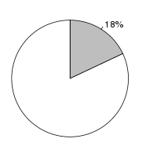
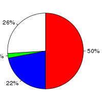
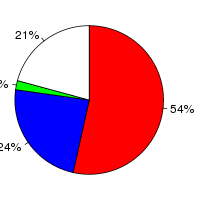

Prunus persica (Prunus persica, GCA_000346465.1) and Arabidopsis thaliana (Arabidopsis thaliana, TAIR10) were aligned using the LastZ alignment algorithm (LastZ) in Ensembl release 76. Prunus persica was used as the reference species. After running LastZ, the raw LastZ alignment blocks are chained according to their location in both genomes. During the final netting process, the best sub-chain is chosen in each region on the reference species.
Full list of pairwise alignments| Gap open penalty (O) | 400 |
| Gap extend penalty (E) | 30 |
| HSP threshold (K) | 3000 |
| Threshold for gapped extension (L) | 3000 |
| Threshold for alignments between gapped alignment blocks (H) | 2200 |
| Masking count (M) | |
| Seed and Transition value (T) | 1 |
| Additional parameters | --ambiguous=iupac |
| Scoring matrix (Q) | Default |
| Prunus persica | Arabidopsis thaliana | |
|---|---|---|
| Chunk size | 10,000,000 | 10,100,000 |
| Overlap | 0 | 100,000 |
| Group set size | 0 | 10,100,000 |
| Masking options | {default_soft_masking => 1} | {default_soft_masking => 1} |
Number of alignment blocks: 147640
| Genome coverage(bp) | Coding exon coverage (bp) | |
|---|---|---|
| Prunus persica |  |  |
| Covered: 40,486,684 out of 227,251,827 | Matches: 16,766,554 out of 33,830,599 | |
| Uncovered: 186,765,143 out of 227,251,827 | Mis-matches: 7,522,635 out of 33,830,599 | |
| Insertions: 707,802 out of 33,830,599 | ||
| Uncovered: 8,833,608 out of 33,830,599 | ||
| Arabidopsis thaliana |
|
 |
| Covered: 37,737,467 out of 119,667,750 | Matches: 18,164,768 out of 33,462,323 | |
| Uncovered: 81,930,283 out of 119,667,750 | Mis-matches: 7,872,574 out of 33,462,323 | |
| Insertions: 548,917 out of 33,462,323 | ||
| Uncovered: 6,876,064 out of 33,462,323 |